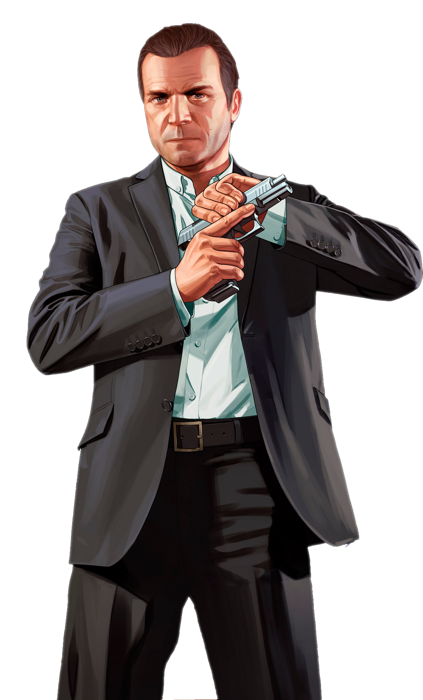

Main Characters of GTA 5
Franklin
Franklin Clinton is one of the three main playable characters in the video game Grand Theft Auto V, created by the company Rockstar Games. He is a young man who grew up in a poor neighborhood in the city of Los Santos. Franklin’s life has not been easy, and many of his choices are shaped by the environment he grew up in.
Franklin is an ambitious and intelligent person. Unlike many people around him, he does not want to stay stuck in street crime forever. At the start of the story, he works as a repo man. This means he takes back cars from people who cannot pay for them. He works for a dishonest car dealer named Simeon Yetarian. Franklin often feels that this job is unfair and that Simeon takes advantage of him.
Franklin lives with his aunt, Denise Clinton, in the neighborhood of Strawberry. Their relationship is difficult because Denise often criticizes Franklin and tells him that he needs to change his life. Franklin sometimes feels frustrated because he is trying to improve his situation but does not know how to escape the life around him.
One of Franklin’s closest friends is Lamar Davis. Lamar is loud, funny, and often gets Franklin into trouble. Lamar enjoys the gangster lifestyle and does not think much about the consequences. Franklin cares about Lamar, but he also knows that following Lamar’s ideas can be dangerous.
Franklin’s life changes when he meets Michael De Santa, a former bank robber who is now living a rich but unhappy life. Michael sees potential in Franklin and begins to mentor him. Through Michael, Franklin learns more about bigger criminal jobs such as robberies and heists. Franklin becomes involved in dangerous missions together with Michael and another criminal named Trevor Philips.
Compared to the other main characters, Franklin is calmer and more thoughtful. He often tries to think before he acts. He also dreams about a better life with money, success, and respect. Over time, Franklin earns enough money to buy a large house in the Vinewood Hills, which shows that he is slowly moving away from the life he had before.
Franklin is also known for his strong driving skills. In the game, he has a special ability that allows him to slow down time while driving. This helps him make sharp turns and avoid crashes during fast chases. Because of this ability, Franklin is considered one of the best drivers in the story.
In personality, Franklin is loyal, determined, and realistic. He wants to succeed but also tries to keep some morals. Throughout the story of Grand Theft Auto V, players can see Franklin grow from a small-time criminal into someone who has more control over his life and future.
Overall, Franklin Clinton represents a character who is trying to escape his past and build a better life, even though he is surrounded by crime and difficult choices.

Michael
Michael De Santa is one of the three main playable characters in the video game Grand Theft Auto V, developed by Rockstar Games. Michael is a middle-aged man who used to be a professional bank robber. After many years of crime, he now lives a rich but unhappy life in the city of Los Santos.
Michael lives in a large house in the wealthy area of Rockford Hills with his family. His wife, Amanda De Santa, often argues with him, and their relationship is very unstable. Michael also has two children, Jimmy De Santa and Tracey De Santa. Jimmy spends most of his time playing video games and avoiding responsibility, while Tracey dreams about becoming famous. Michael tries to be a good father, but he often struggles to understand his children.
Before moving to Los Santos, Michael worked as a skilled criminal together with his old partner Trevor Philips. They robbed banks and carried out many dangerous heists. Eventually, Michael made a secret deal with a government agent named Dave Norton. Because of this deal, Michael was able to fake his death and enter a witness protection program. This allowed him to live a quiet life with money, but it also meant leaving his criminal past behind.
Even though Michael is rich, he feels bored and unhappy. He spends a lot of time drinking, watching television, and visiting a therapist named Dr. Isiah Friedlander. Michael often talks about his anger, stress, and problems with his family. Deep down, he misses the excitement and purpose he had when he was committing heists.
Michael’s life changes when he meets Franklin Clinton. Michael sees that Franklin is smart and capable, and he decides to help him learn about bigger criminal jobs. Soon, Michael returns to the world of crime and begins planning new heists. This also causes his old partner Trevor to discover that Michael is still alive, which creates many dangerous and emotional situations.
Michael is known for his intelligence and experience. He is very good at planning robberies and thinking strategically. In the game, he has a special ability that allows him to slow down time during gunfights. This helps him aim more accurately and defeat enemies quickly.
In personality, Michael can be sarcastic, impatient, and sometimes selfish, but he also cares about his family and friends. He often struggles between wanting a peaceful life and being drawn back into crime and danger. Throughout the story of Grand Theft Auto V, Michael tries to repair his family relationships while also dealing with the consequences of his past.
Overall, Michael De Santa is a complex character who represents someone trying to balance wealth, family life, and a past filled with crime. Even though he has everything he once wanted, he still searches for meaning and excitement in his life.

Trevor
Trevor Philips is one of the three main playable characters in the video game Grand Theft Auto V, developed by Rockstar Games. Trevor is known as one of the most unpredictable and dangerous characters in the game. He lives a chaotic life and is famous for his violent behavior, strange personality, and lack of fear.
Trevor lives in a small desert town called Sandy Shores, located in the desert region of Blaine County. His home is a messy trailer, which reflects his wild lifestyle. Unlike the other characters, Trevor does not care much about money, luxury, or social status. He lives however he wants and does not follow normal rules.
In the past, Trevor worked together with his close friend Michael De Santa. The two of them were partners in many dangerous bank robberies and criminal operations. Trevor trusted Michael deeply and believed they would always work together. However, Trevor later thought that Michael had died during a failed robbery years ago.
Trevor now runs a small criminal business called Trevor Philips Enterprises. Through this business, he deals with illegal activities such as drug trafficking, gun running, and other dangerous operations. Many criminals in Blaine County are afraid of Trevor because of his violent temper and unpredictable actions.
Even though Trevor can be extremely aggressive and destructive, he also shows moments of loyalty and emotion. When he discovers that Michael is actually alive and living in Los Santos, Trevor becomes very angry but also feels betrayed and hurt. Their complicated friendship becomes an important part of the story.
Trevor eventually becomes involved in major heists again, working together with Michael and Franklin Clinton. While Michael plans the jobs and Franklin helps carry them out, Trevor often acts as the wild and unpredictable member of the group. His fearlessness and willingness to do anything make him both valuable and dangerous.
In the game, Trevor has a special ability that allows him to enter a rage mode. During this ability, Trevor takes less damage from enemies and deals much more damage in fights. This ability reflects his aggressive personality and his willingness to fight without hesitation.
Trevor’s personality is very extreme. He can be funny, terrifying, loyal, and cruel all at the same time. He often says shocking things and behaves in ways that surprise everyone around him. However, underneath his chaotic behavior, Trevor sometimes shows that he cares deeply about the few people he trusts.
Overall, Trevor Philips represents the wild and uncontrolled side of the criminal world in Grand Theft Auto V. His unpredictable nature, violent actions, and strange sense of loyalty make him one of the most memorable characters in the entire story.

Lester
Lester Crest is an important character in the video game Grand Theft Auto V, developed by Rockstar Games. Lester is not a typical criminal like Franklin, Michael, or Trevor. He is a smart and calculated man who specializes in technology, planning, and strategy. He is often the one who organizes the major heists and plans for the main characters.
Lester lives in a small apartment in the city of Los Santos. He has health problems and cannot see or walk well, which makes him physically weak. Despite his physical limitations, he is mentally very sharp and uses computers and technology to achieve his goals. Lester can hack security systems, gather information, and create important heist plans.
He is very intelligent and often sarcastic. Lester prefers to stay out of dangerous situations, but he enjoys planning complex crimes and manipulating people to reach his goals. He often works as an advisor and strategist for the three main characters: Franklin Clinton, Michael De Santa, and Trevor Philips. Without Lester, many of their biggest heists would probably not be possible.
Lester strongly believes in control and planning. He can analyze any situation and figure out how to take advantage of it. He makes sure the main characters know exactly what to do during a heist. He can also gather information about security systems, guards, and routes so the heists are less risky. Thanks to his intelligence, he is an essential ally for anyone involved in crime.
In personality, Lester is calm, smart, and sometimes cynical. He does not trust people easily, but he respects those who can work well together and follow his ideas. Although he is physically weak, he shows that knowledge and strategy can be more powerful than brute force. Lester represents the "brains" role in the team, while others handle the physical action.
In short, Lester Crest is an essential character in Grand Theft Auto V. He shows that with intelligence, planning, and technology, you can have a huge impact even if you are not the one doing the dangerous tasks yourself. Without his plans and expertise, the heists by Franklin, Michael, and Trevor would be much harder or even impossible.